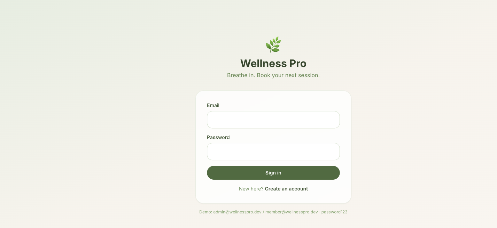

The core problem before: the frontend logged in against /api/auth/login and /api/auth/register — endpoints that did not exist. Spring Security + JWT were declared as dependencies but had zero implementing code. The app could not authenticate a single user. It is now functional from login through booking through admin analytics.
System state
● BEFORE — scaffold
6 JPA entities, 6 repositories
4 controllers calling repos directly — no service layer
No security code (deps only), no JWT, no auth endpoints
Entities serialized to JSON → password hashes leaked
No DTOs, no validation, no exception handling
Booking: save() with a // TODO: check capacity
No tests. No analytics. No seed data.
Frontend: deprecated CRA, 4 unstyled stub pages
Spring Boot 3.2 / Java 17 — won't compile on local JDK 24
● AFTER — working app
Layered: controller → service → repository
JWT auth both ends, BCrypt, role-based (MEMBER / ADMIN)
Response DTOs — password never leaves the server
Bean validation + global exception handler (consistent JSON errors)
Capacity-aware booking: full / double-book / past-class all rejected
Admin analytics: revenue, occupancy, top classes
Plan subscription + simulated payments + payment history
Admin class management (create / delete) — gated to ADMIN
10 unit + 7 integration tests, all green
Vite + Tailwind + TanStack Query, 8 designed pages
Spring Boot 3.4 / Java 21, H2 dev + Postgres prod, clone-and-run
@Transactional
public BookingResponse book(Long memberId, Long classId) {
var member = memberRepo.findById(memberId)...;
var cls = classRepo.findById(classId)...;
if (cls.getSchedule().isBefore(now()))
throw new ConflictException("already started");
if (cls.getCurrentEnrollment() >= cls.getMaxCapacity())
throw new ConflictException("That class is full");
if (bookingRepo.existsBy...Confirmed(memberId, classId))
throw new ConflictException("already have a booking");
cls.setCurrentEnrollment(cls.getCurrentEnrollment() + 1);
...
}
memberId from the JWT, not the body
3 guards, atomic enrollment increment
Returns a DTO, not the entity
Live UI (captured from the running app)
Spa / zen visual direction: earthy sage + clay palette, generous whitespace, fitness-tracker stat cards.
Login — login + register toggle, demo credentials

Member dashboard — stats, next session, membership
SubscriptionService: subscribe records a COMPLETED payment + attaches the plan, one transaction. PaymentController for history. Wired into analytics revenue.
✓ subscribe→plan attached · payment recorded · history newest-first
Phase 7 · Admin class management (backend)
Added PUT /api/classes/{id} (update with enrollment guard); confirmed POST/DELETE. All gated to ADMIN.
✓ member→create→403 · admin→create→201
Phase 8 · Frontend — Plans, Profile, Class management
3 new pages: Plans (subscribe), Profile (edit + payment history), Manage Classes (create/delete). Surfaces every backend capability. Nav + routes wired.
✓ vite build — 143 modules, exit 0
Phase 9 · Tests + verify + report
SubscriptionService unit tests + subscription/RBAC integration tests. Full suite green. All 8 pages browser-verified, screenshots recaptured.
✓ Tests run: 17, Failures: 0, Errors: 0
Bugs found & fixed (not just feature-adding)
Bug
Root cause
Fix
Compile failed — Lombok setters missing
JDK 24: Lombok wasn't registered as an annotation processor
Backend: auth, services, DTOs, analytics, payments, subscription, class mgmt, tests
done
Frontend: 8 pages — member + admin flows, all backend capabilities surfaced
done
No dead code: every API function and backend endpoint is now wired to UI
done
README rewritten to match the real app
done
Review the diff, then git add / commit (left to you per your rules)
needs you
Optional follow-ups: Docker Compose, CI, real payment gateway, auto-renewal cron
your call
Run it yourself
cd wellness-pro/backend && ./mvnw spring-boot:run # :8080, seeds demo data
cd wellness-pro/frontend && npm install && npm run dev # :5173
cd wellness-pro/backend && ./mvnw test # 17 tests# demo logins (password123):# admin@wellnesspro.dev · ADMIN# member@wellnesspro.dev · MEMBER